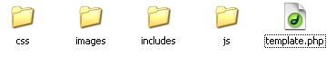
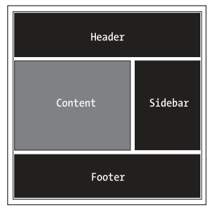

Templates
.
In EZPHP, a template is used to setup design structure of your site. It is actually a single
file named template.php which inludes/imports all the files common to your site such
as header, sidebar(s), footer, etc. It also imports any CSS, Javascript files you may need
throughout your site. The dynamic and unique content relevant to each page is echoed in this
file from the view files however.
This template file is created under template/[your_template_folder]/template.php where [your_template_folder] is the folder under which you will create this file, you can name this folder anything you want. Once you create a template file, you will have to specify the name of the template folder in the config/config.php by setting the option template_dir under the template section. This way, all your view files will be applied this template.
You can create any number of templates for your site. For example, you may want to create a template for the front-end of your site as well as back-end of your site. If your client asks you to change the design of site, you may create another template for that thereby keeping the old design intact.
.
Creating Templates
.
EZPHP puts you in full control about creating structure of your template files. There in no
hard and fast rule as to how you design your template structure. This could be best explained
with an example. Let's suppose we have to create a template for our site mysite
that has header, sidebar, footer and it also needs a javascript framework file such as jquery. Here is
how we might go on to creating the template for it:
→ Step 1
First of all, we create a folder named mysite under the template folder.
→ Step 2
We create a template file named template.php under the mysite folder we created in step 1. We now assume that our template will need a stylesheet file, header, sidebar, footer files, images and javascript files, therefore, we create four folder that our template file will include/import these files from:
- css: contains our stylesheet file.
- images: contains images of our site.
- includes: contains any included files such as header, sidebar, footer, etc.
- js: contains any javascript files needed by our site.
Now, our folder structure looks like this under the template/mysite folder:

→ Step 3
We now edit the template.php file to come up with design structure of our site. Here we assume that our site design is very rudimentary that simply needs header, sidebar, main content and footer. This is how the structure of our template will look like:

In the above picture, the Content box will be populated by the view files only. So in our template, we consider only header, sidebar and footer.
We now put this code in our template.php file:
Note: Here we have created DIV-based layout for our template but if you want
you could create the TABLE-based layout too.
We have only created the skeleton of our template, now we modify it to import our
CSS, Javascript, header, sidebar and footer files:
Now there are quite few things to notice in the above template:
First of all, on lines 05 and 06, we have used the EZPHP's built-in variable $ez_template_path. It is path to your template folder including the trailing slash eg in this example, it corresponds to ./template/mysite/. You need to use this variable to include any CSS, Javascript or images on your template file.
For the header, sidebar and footer, we simply include those files in our template using PHP's include construct. This includes files from includes folder we created earlier.
Lastly, for the content which will come from view files, we have used the EZPHP's built-in variable $ez_layout_content on line 17. This way, view files are echoed in our template using this variable.
→ Step 4
Now that we have finished creating our template, we need to specify this in config/config.php file by setting the option template_dir under the template section. We also set use_template to 1 (one) because we are intending to use a template for out site.
→ Conclusion
As we mentioned earlier, you can code your template files any way you want. There are only two things you need to consider:
- The usage of EZPHP's $ez_template_path variable as shown above.
- The usage of EZPHP's $ez_layout_content variable as shown above.
.
Built-In Variables
.
You have following built-in variables available to be used in your template or view files.
- $ez_template_path : path to the template folder eg ./template/mysite/
- $ez_full_path : full path to the template folder eg C:/wamp/www/EZPHP/template/mysite/
- $ez_content_path : path to the content folder eg C:/wamp/www/EZPHP/content/
- $ez_base_path : path to the base EZPHP folder eg C:/wamp/www/EZPHP/
- $ez_template_name : name of the template folder eg mysite
- $ez_view_path : path to the views folder eg C:/wamp/www/EZPHP/contnt/views/
As can be seen, all paths end with a trailing slash character. So you don't need to specify this trailing slash character when using these variables.
Note: Paths may come out to be different for you depending on where you have installed the EZPHP.
.
Loading Different Templates
.
In some cases, you many want to use a different template for some of the your controllers/pages.
An example that fits this scenario is that you may use a different template for admin/backend side for your
site. To load a different (other than the one you have specified in config file) template,
you can use the load_template() method from the controllers.
Above controller expects that you have already created a template for the admin
side, that is, template/admin/template.php. Note also that you use
the template folder name, not the template.php file with
the load_template method (see line 11 above).
.
The no_template() Method
.
If you don't want to apply a template to any page, you could use the no_template() method
so that no template is applied to that controller/page.
.
.
.
EZPHP © 2010. All Rights Reserved.